12 教育の民営化
12.1 学習目標
- 「教育の民営化」とは何かを定義し、その二つのパターンを理解する。
- フリードマン・ウエストによる民営化論の理論的根拠を説明できる。
- バウチャー制度・チャーター・スクール・マグネット・スクールの仕組みと特徴を理解する。
- 日本における教育の民営化の実態（私立学校在籍者数の推移・学校選択制）を把握する。
- 民営化の推進論と批判論それぞれの論点を整理し、自分なりの見解を持つ。
12.2 教育の民営化とは
民営化とは何か——定義と二つのパターン
「教育の民営化」は英語では「Privatization of education」と表現される。「民営化」というからには動的であり、教育経済学では民営へと移行する経緯、工程、そしてそれらの結果が考察の対象となる。教育の民営化は大きく二つのパターンに分けられる。
（出典：松塚 第7章 第1節、pp.161–162）
各国の教育民営化
Verger, Fontdevila & Zancajo（2016）は、教育の民営化を進めた主要地域を対象に民営化へと移行する経路を系統立てて分類している。
| 地域・国 | 民営化の特徴 |
|---|---|
| アメリカ | 市場原理に基づく学校選択のスケールアップに力点。「学校選択改革」と評する。 |
| イギリス | 自由化と市場原理の導入という点ではアメリカと共通するが、国レヴェルの教育行政改革の特徴が濃く、チリとともに政治的なイデオロギーが原動力となった国家的改革。 |
| 北欧諸国（スウェーデン等） | 福祉国家における民主主義的理念のもとに、より多くの選択肢を市民に提供するために民営化を進める。 |
| 低所得国 | 近年授業料の安い民営学校が自然発生的に急拡大。サブサハラアフリカ・南アジア・南米の最貧国に見られる。国が主導しているわけではなく、市民による良好な教育の求めがもたらした結果。 |
| 西南欧（オランダ・ベルギー・スペイン等） | 他の地域よりも長きにわたって私立学校が繁栄。「歴史的な官民連携」と評される。カトリックを中心とした信仰に基づく学校が発展。 |
（出典：松塚 第7章 第1節 1-1、pp.162–163）
教育経済学による教育民営化の研究
教育経済学分野における教育民営化の研究は1980年以降の動向に焦点をあてる場合が多く、概ね二つの側面を検証する。
（1）供給側：学校の管理運営体制の変容
国や自治体が管理運営し公財政支出によって費用が賄われる状態を出発点とし、そこから私的財源による管理運営へと移行する過程が「民営化」である。民営化への移行は市場参入等をめぐる規制緩和、市場化及び市場原理に基づく競争の導入によって促され、支えられる。学校教育の管理運営を請け負った団体や個人は、教育の設計や運営に一定の裁量をもって臨むこととなり、より多くの児童・生徒・学生やその保護者のニーズに応え収益を高めるように事業を展開する。
（2）需要側：児童・生徒・学生とその保護者の教育需要行動の変容
選択幅の拡大やそれに伴う教育費の私的負担額の変動が研究対象となる。各学校の教育内容や運営方針に関する情報を入手し、自らの希望とニーズに応える学校を選択する機会を得るともいえる。一方、民営校は授業料等学費の設定における自由度が高い。
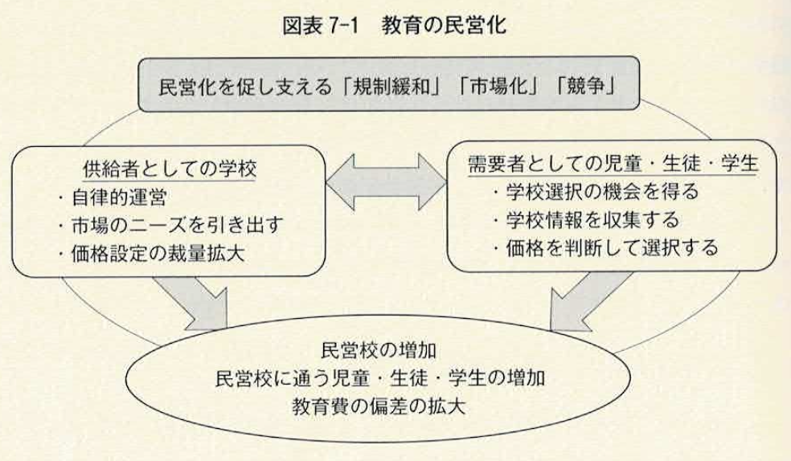
（出典：松塚 第7章 第1節 1-2、pp.163–164、図表7-1、p.164）
12.3 教育民営化の経緯
政府主導への批判から民営化の要請へ
第6章で述べた、政府主導型教育運営の妥当性に関する一連の批判は、教育の民営化を求める議論と表裏一体であった。以下の観点が教育民営化を推し進める根拠となった。
- 教育が国家の経済発展をもたらすとしても、教育が国によって運営されなければならないということにはならない。
- 教育の外部性は教育自体から発生するのであり、その管理運営が、公によるものでも民によるものでも同様の効果が実現する。
- 公教育の目的の一つである「共通の価値形成」は時に多様な社会の多様な価値観の尊重を妨げる。
- 公的義務教育は教育の機会を保障し公平な社会の実現を目指したものの、教育機会が拡大する一方で経済格差が拡大するなど、公平な社会形成に貢献したとはいえない。
これらの議論は1970年代前半から1980年代中盤にかけて、イギリスとアメリカで盛んになり、特に初等・中等教育レヴェルで市場原理の導入が急速に進む理由となった。
アメリカの場合
1980年代も続く経済成長の低迷について、その原因が地方教育行政の官僚化・法規制の硬直性・団体交渉による統一的な給与体系などにあるとされた。既存制度への変革の要請が公教育に市場原理を導入しようとする流れにつながった。この時期はレーガン政権のもとで連邦の教育予算が縮減されたこともあり、民営化に関係する教育改革は州あるいは学校区のレヴェルで行われた（Witte, 2000）。
イギリスの場合
イギリスは、教育民営化を国家主導で政治的インセンティブのもとに推し進めた。1970年代、大きな政府による行政機構の硬直と公共事業による財政赤字の増大、更に石油危機とも相まって低迷した社会経済の状況が「英国病」と呼ばれ、政府の指導者が批判にさらされた時代である。1979年に政権をとったマーガレット・サッチャーは新自由主義的な改革を推し進め、ガス・水道・電信などの公益事業を民間に売却した。教育分野についても、1988年に初等から高等教育を網羅する「教育改革法（Education Reform Act）」を制定した。これにより、ナショナルカリキュラムを創設し公営学校の入学定員を拡大する一方で、生徒数を基にした補助金配当によって各校の自律性を高めつつ競争を促す制度設計を行った。これは、ビジネスセクターによる学校運営、地方の教育委員会の管理外にあるグラントベースの学校制の導入など、市場原理の導入を基盤とした国家的制度改革であった（Fitz & Hafid, 2007）。
（出典：松塚 第7章 第2節 2-1、pp.165–166）
フリードマンからはじまった民営化論争
教育の民営化をめぐる議論がはじまったのは上記のような改革がはじまる20年以上も前である。教育民営化の基盤的概念を明示し、民営化の理念と実践の両面で世界的な影響をもたらしたのは、ミルトン・フリードマン（Milton Friedman）が1960年代初頭に著した Capitalism and Freedom（資本主義と自由）の第6章「Role of Government in Education（教育における政府の役割）」であろう（Friedman, 1962）。
フリードマンの議論の軸には、政府の規制は不正などの取り締まりのみに限られるべきで、基本的にはマーケット主導型の経済活動が発展すべきだという考えがある。特に教育については、学校教育のほとんどが政府の責任のもとに管理され、運営も財政も公的予算によって賄われていることに強い疑問を呈している。
フリードマンは教育への政府介入を否定したわけではない。教育への政府介入は、（1）教育が相当な外部効果を有すること、（2）子どもなどの判断能力及び責任能力の無い者への温情主義的な観点から、十分に正当化できるとしている。加えて、学校教育は社会が効果的に機能するための基礎であり、そのような教育が生み出す社会的便益を確かにするために公共予算の支出は必要であるとも述べている。
フリードマンの論点は、その予算が「どのような方法で、どの程度、何を対象に向けられるべきなのか」にある。そしてこの問いへの答えとして、「地方分権」と「民営化」を挙げているのである。
（出典：松塚 第7章 第2節 2-2、pp.166–168）
ウエストによって具体化する民営化の論理
フリードマンから発せられた教育の民営化の議論は、イギリスの経済学者であるエドウィン・ウエスト（Edwin G. West）によって具体化された。ウエストは、政府主導型の教育制度が長年にわたって学校教育の質に与えた影響を研究した。その影響は望ましいものではなかった、というのが結論である（West, 1965）。
この研究を通じてウエストは、教育に対する中央政府の介入を抑制し、規制緩和によって民間主導の学校運営を実現し、子どもとその保護者が自由に学校を選べる体制を構築することを推奨している。具体的には、市場原理の導入によって、（1）学校運営の効率が上がり、（2）教育の質が上がり、（3）その恩恵は貧困層により多くもたらされると説いた。
ウエストの主張のポイント
（1）学校運営の効率向上
学校教育の現場を市場とみなし、その市場への参入規制を緩和し競争原理を導入する。そうすれば、教育機関は無駄を無くし運営の効率を上げようとするだろう。各学校が自立性を確保し運営改善の努力を強化することが期待できる。教職員に対しては勤務成績を反映した給与制度であるメリットペイを導入する。業務のモニタリングによる管理などで報酬体系にメリハリをつけることによって運営効率は向上する。
（2）教育の質向上
学校教育に市場原理を導入することによって、学校とその教職員は子どもと保護者のニーズや欲求により敏感になり、それに応えようと教育の質を上げることが期待できる。学校内においては教職員の報酬に上記のような勤務成績を反映する業績制度を導入することによって、教職員個々が業務や教育の質を向上しようとするインセンティブが生じる。
（3）貧困層への恩恵
政府主導型による学校運営では、子どもたちにとって教育は「与えられるもの」という位置づけになりがちである。教育の民営化の軸となるのは教育資金を子どもの保護者に渡すことによって彼らが学校を自主的かつ自由に選択できるようにすることである。これによって子どもや保護者はある意味「客」として教育商品を選ぶことができ、教育の「積極的な消費」が促される。
（出典：松塚 第7章 第2節 2-3、pp.168–170）
私立学校就学率と教育費民間負担の動向
図表7-2は初等教育で私立学校に就学する児童の割合について、過去20年の推移を概観したグラフである。世界全体で明らかに私立学校に通う児童の割合は増加している。
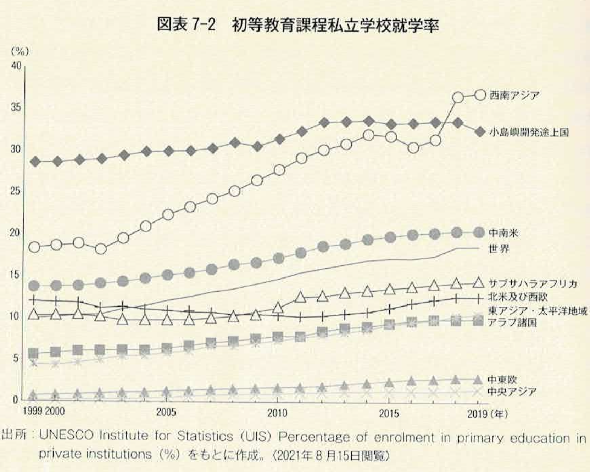
高めに推移している小島嶼開発途上国の私立就学者割合は、公教育が行き届いていない事情によるところが大きく、それ自体が問題であるが、私立就学者の割合がますます増加していることは一層深刻な問題であろう。最も顕著な上昇が見られるのは、アフガニスタン南部・パキスタン西部・イラン東部を含めた西南アジア地域である。
教育費負担の面でも民間支出が占める割合が増えている。データが描くOECD諸国の平均を見ると、初等教育から高等教育までを通した教育費全体に占める民間支出の割合は1995年には12.6%であったが、2000年は13.3%、2005年は15.7%、2010年は15.8%と一貫して上昇し、直近の2017年には、民間支出が20.5%、公共支出が71.4%、公共から民間あるいは家庭への移転が8.1%である。
むろん大多数の児童や生徒が公立学校に通い、大半の予算は公的に支出されている。しかし、公に対して民による管理運営の比重が増してきていることは明らかである。
民営化へのこの世界共通の動向に答えるには、教育学や経済学を越えた考察が必要となる。各国政府の政治理念や政策の動向、教育改革との関係、人口動態や産業構造の変化、国際化の影響、文化的あるいは宗教的背景、教員組合など教育組織の構造的特徴といった地域で異なる実態のミクロ的調査のもとにマクロ的分析を要する。
（出典：松塚 第7章 第2節 2-4、pp.170–173）
民営化推進論の論点を整理する
個人ワーク（3分）ペアワーク（5分）
フリードマンとウエストの民営化推進論の核心をひとことで言うと何でしょうか？あなたは賛成しますか、反対しますか？
考え方の整理
- 「学校を市場にする」ということ。
教育を「市場」と見る視点では、競争・効率・消費者の選択が中心価値となる。一方、教育を「公共財」と見る視点（第1章・第6章）では、機会均等・共通の価値形成・国家の責任が中心となる。この二つの視点の「どちらが正しいか」ではなく、どのような条件のもとでどちらの要素が重要かを考えることが教育経済学の問いである。
12.4 民営化の実際と方法
民営化の進展は国や地域によって一様ではないものの、ほぼ共通する動向は、（1）自治体あるいは学校区への分権化と自治制の強化、（2）部分的規制緩和、（3）自由化に伴う準規制の整備が挙げられる。これら三つは同時並行的あるいは前後して起こっているが、具体的には以下のような形態で進行している。
- 自治体内あるいは学区内での入学開放
- 使途限定のバウチャー制度
- チャーター・スクールの導入
- マグネット・スクールに見られる分野特化された学校への選択入学
（出典：松塚 第7章 第3節 冒頭、pp.173–174）
バウチャー制度
バウチャー（金券証書）制度は教育の主体的需要を実現しようとする教育の財政運用制度である。フリードマンが提唱した教育民営化の具体的な制度上の手段であり、学校選択の具体的手段として議論されまた使用されてきた。
バウチャー制度の仕組み
まず政府から学生あるいはその保護者に対してバウチャーが渡される。このバウチャーは授業料を中心とする就学費用に使途が限定される「使途限定証書」である。学生と保護者はそれを手に学校を選ぶ。フリードマンの想定では対象となる学校形態は問わず、公私立ともに対象となる。通学する学校が決まると学生（保護者）はバウチャーを学校に渡し、学校は学生に教育を提供する。学校は受け取ったバウチャーを政府に渡すことで教育予算を得る。学生や保護者に人気が高い学校ほど多くの予算を獲得できる仕組みとなっている。
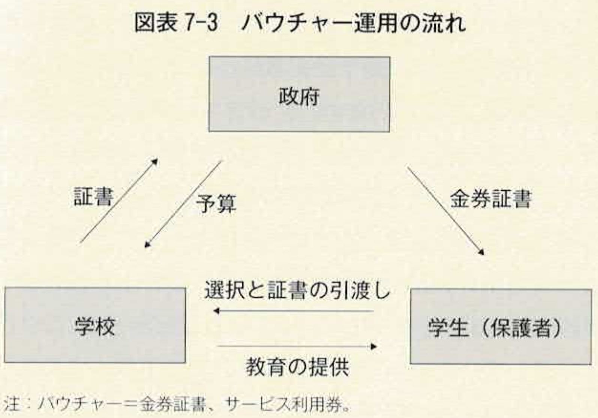
バウチャー制度の歴史的経緯
古くは1870年〜1871年の普仏戦争でフランスが敗北した際に軍教育の質を上げるために考案されたといわれる。アメリカでは1869年にバーモント州で、地元に学校が無い子どもたちが他の町の私立学校に就学する際に適用された。オランダがバウチャー制度を導入したのは1917年である。2015年の段階でオランダの70%の学童が公的予算で民間が運営する学校に通っており、オランダはバウチャー制度が定着・成功した例として挙げられる。
アメリカにおけるバウチャー制度の展開
アメリカでは連邦レヴェルの政策でいうと1980年代にレーガン政権が教育バウチャーを推奨し、ブッシュ政権（George W. Bush）の教育改革案に盛り込まれた。この改革案は2002年に可決された「No Child Left Behind Act（どの子も置き去りにしない教育法）」につながった。2021年4月の時点で、アーカンサス・フロリダ・ジョージア・インディアナ・ルイジアナ・メイン・メリーランド・ミシシッピ・ニューハンプシャー・ノースカロライナ・オハイオ・オクラホマ・テネシー・ユタ・バーモント・ウィスコンシンの16州とプエルトリコ・ワシントンD.C.が教育バウチャーを運用しているか、運用した経験を有する。
南米・ヨーロッパの事例
南米ではコロンビアで世界銀行の資金提供により、1991年から低所得層の中高生を対象に抽選で教育費の半額強に相当するバウチャーを支給した。チリでは1981年に初等中等課程の全生徒を対象に導入入し、私立学校は学費を徴収しなければ生徒数に応じて公立学校と同額の補助を受け取ることができる。これにより1,000校を超える私立学校が市場に参入したとされる。ヨーロッパでは、オランダが1917年以降ほぼすべての私立学校に公立教育に基づき学校が決まり、全国のどの学校でも就学することができる。スウェーデンでは1992年に初等中等教育でバウチャーが導入され、これにより生徒は公立学校と私立学校（フリースクール）両方から自由に学校を選べるようになった。
（出典：松塚 第7章 第3節 3-1、pp.174–176）
チャーター・スクール
チャーター・スクールは政府から「チャーター（設立認可書）」を得た個人や団体により運営される初等・中等段階の公立学校であり、1990年代からアメリカを中心に拡大している。日本では「公募型研究開発校」と称されているが、事際「公募型」であるところに最大の特徴がある。政府の公募に対して、保護者・地域住民・教師・市民活動家など学校の設立運営を望む個人あるいは団体が応募をする。それぞれの地域で独自の教育方針を有する学校運営を目指し、運営のための教員やスタッフも自ら集める。認可が下りると公的資金を受けて学校が設立される。
チャーター・スクールの特徴
運営は設立申請を行った個人あるいは民間団体が中心になって執り行うことから、公設民間運営校という位置づけとなる。教師の採用や雇用、カリキュラムやプログラムまで各校が自らの裁量で意思決定をして運営することができ、通常の公立学校に課せられている指導要領や運営規則などの様々な義務や規制から免除されている。そのため、チャーター・スクールは他の公立学校よりも明確な教育成果や教育予算・運営に関する「説明責任」を負っている。設置申請時に数年後の到達目標を定めるよう求められ、所定の年限内にその目標や運営目的を達成することができなかったり、就学児童が集まらなかったりした場合、チャーター（設立認可書）は取り消され、閉校になることもある。
設置の目的・事例
設置の目的や意図は、既存の公教育に満足が得られなかった保護者や地域団体が自ら理想の教育を実践しようと起ち上げるケース、物づくり・科学・芸術など特定の分野に焦点をあてて、通常の公立学校とは異なる独自のカリキュラムを提供するとされるケース、不登校の子どもたちを対象とするケースなど、様々である。チャーター・スクールの運営費は原則すべて公費で賄われ、当該校の学区内に居住があれば誰でも入学を申し込むことができ、通常の公立学校と同様授業料は無料、入学時に試験もない。
アメリカにおける推移
1992年にミネソタ州セントポールに第一号のチャーター・スクールが設置されて以降、その設置数と就学者数は増え続けている。2000年に448,343人であったチャーター・スクールの就学者数は2019年には3,290,149人となり、7倍以上増加した。アメリカの2019年の初等及び前・後期中等課程の全就学者数は50,330,883人と報告されており、チャーター・スクールに通う生徒は全体の約6.5%を占める。
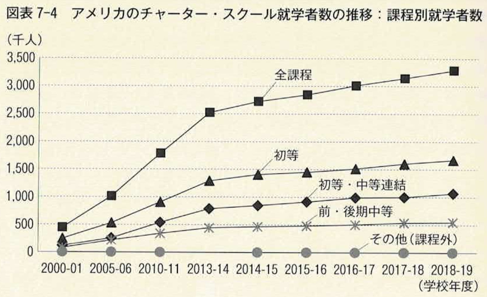
（出典：松塚 第7章 第3節 3-2、pp.176–178、図表7-4、p.178）
マグネット・スクール
マグネット・スクールは特別なコースやカリキュラムを備えた公立学校であり、その特別性のゆえに学校区を超えて生徒を磁石のように引きつける、という意味で「マグネット・スクール」と称される。初等・中等・高等学校生までを対象としており、学校単位で運営される場合もあれば、「学校のなかの学校”Schools within a school”」として既設の一般公立学校のなかにマグネット・プログラムが設置されている場合もある。
特徴と対象教科
原則誰でも入学を希望することができるものの、特別な才能を有した子どもを対象とする場合が多く、入学試験があって概して選抜性が高い。科目を特化して「特別性」を高めるわけだが、対象となる教科には理数系や科学・テクノロジーなどの自然科学系、外国語や国際関係などの人文社会科学系、音楽・美術などの芸術系などがある。進学準備校として知られる「プレップ」や国際バカロレアの資格取得に焦点をあてたプログラム、天才児教育や障害児教育を対象にした特別プログラムなど多様である。
マグネット・スクールの誕生とコールマン・レポートとの関係
マグネット・スクールの発足は第2章で注目した1960年代のコールマンらによる教育の機会均等をめぐる研究と深く関係している。コールマン・レポートの結果を受けて進展した政策であり実践であるといっても過言ではない。子どもたちの学力を決定づけるのは、おおよそ人種の違いによって規定されている家族や近隣の社会的経済的環境であることが明らかになったことから、バス通学網を配備し、子どもたちが地域を越え人種を越えて同一の教育環境で学べる政策を策定・実践したことは先に述べたとおりである。人種による教育格差を是正し、特に勉学意欲のあるアフリカ系アメリカ人により良い教育を受けさせようと環境整備を行ったのである。
アメリカにおける推移
2000年に1,213,976人であったマグネット・スクールの就学者数は2019年には2,672,473人となり、2倍以上増加した。チャーター・スクールのような急速な上昇は見られないものの、コンスタントに増加し続けてきた。
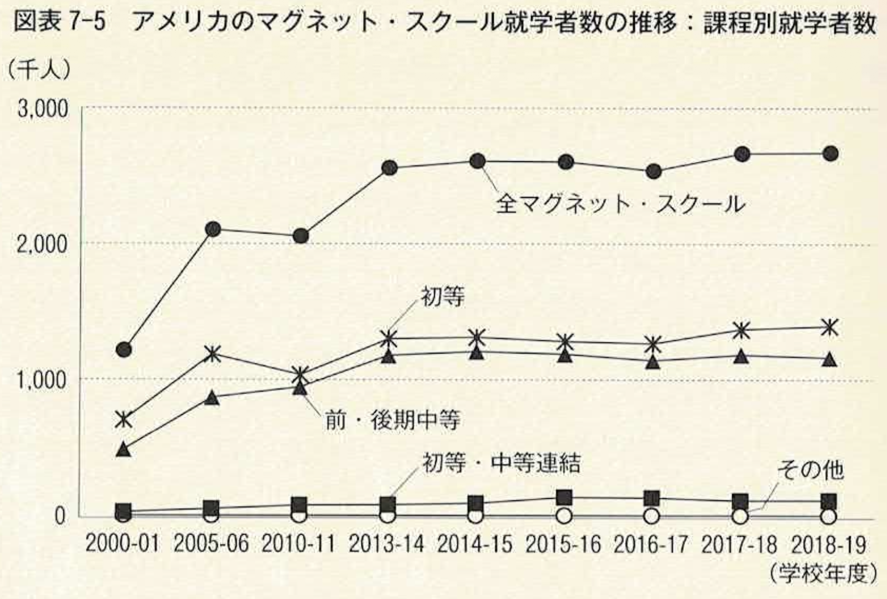
チャーター・スクール、マグネット・スクールがともに成長したのは、アメリカの公立学校の子どもたちや保護者が学校やプログラムの選択幅が広がることを好意的に受け止めた結果といえよう。一方で、2014年まで急速に増加した就学者数の伸びが、それ以降鈍化していることも確かである。
（出典：松塚 第7章 第3節 3-3、pp.178–180、図表7-5、p.180）
三つの制度を比較する
個人ワーク（3分）
バウチャー制度・チャーター・スクール・マグネット・スクールの違いを自分の言葉で整理してみましょう。
| 誰が選ぶか | 誰が運営するか | 費用は誰が払うか | |
|---|---|---|---|
| バウチャー制度 | |||
| チャーター・スクール | |||
| マグネット・スクール |
グループワーク（5分）
- それぞれの制度の「利点」と「問題点」は何でしょうか？
- もし日本で全面的に導入するとしたら、どの制度が最も馴染みやすいと思いますか？
表の記入例
| 誰が選ぶか | 誰が運営するか | 費用は誰が払うか | |
|---|---|---|---|
| バウチャー制度 | 保護者・生徒（バウチャーを持って学校を選ぶ） | 学校（公立・私立を問わない） | 政府（公費をバウチャーとして給付） |
| チャーター・スクール | 保護者・生徒（学区内在住なら誰でも申込可） | 保護者・地域住民・教師など、認可を得た個人・団体 | 政府（原則すべて公費） |
| マグネット・スクール | 保護者・生徒（ただし入学試験があり選抜性が高い） | 教育委員会・公立学校（特別プログラムを設置） | 政府（公費） |
考え方の整理
三つの制度に共通しているのは「選択の拡大」と「公的資金による運営」である。しかし、選択の主体（保護者 vs 学校）、運営の主体（民間 vs 公立）、対象（すべての子ども vs 特定の子ども）はそれぞれ異なる。バウチャーは「需要側」の変革、チャーター・スクールとマグネット・スクールは「供給側」の変革と整理できる。
12.5 日本における教育の民営化
冒頭で述べたように、本章では民営化を二つの観点から捉えている。一つは民営学校の在籍者数が増えるという統計的な実態が物語る観点から、もう一つは、学校選択制の導入・市場の原理並びに競争メカニズムの導入など民営化を推進する政策実践的な観点である。
私立学校在籍者数の推移
文部科学省の「学校基本調査」をもとに中学校と高校それぞれについて私立と国公立の在籍者数の推移を比較しよう。
中学校
2020年5月1日の時点で、日本の中学校の全在籍者数は3,211,219人、そのうち公立中学校に在籍する生徒は2,941,423人、国立中学校に在籍する生徒は27,701人、私立中学校に在籍する生徒は242,095人であった。国公立に在籍する者が9割以上を占める。在籍者数は1990年202,603人から2020年の242,095人へと微増している。この増加は、少子化が続き中学生人口が減少し続けた間も他の設置形態の学校生徒を吸収してきたことを意味する。私立中学校に在籍する生徒の中学生全体に占める割合は1990年の3.8%から2020年には7.5%と倍増している。
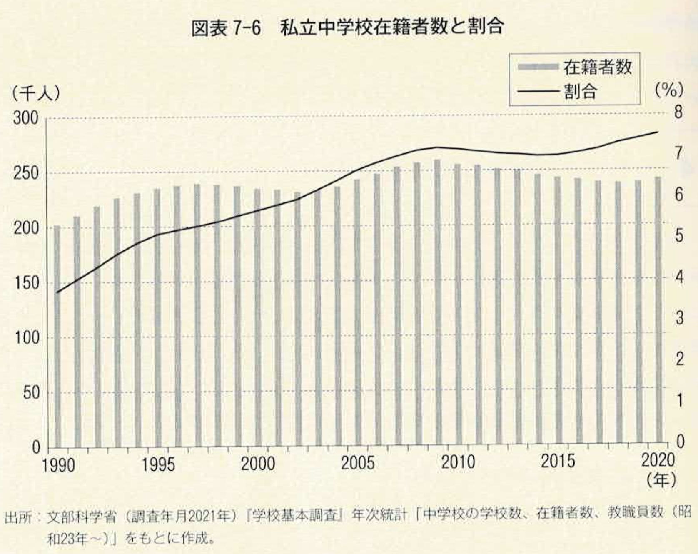
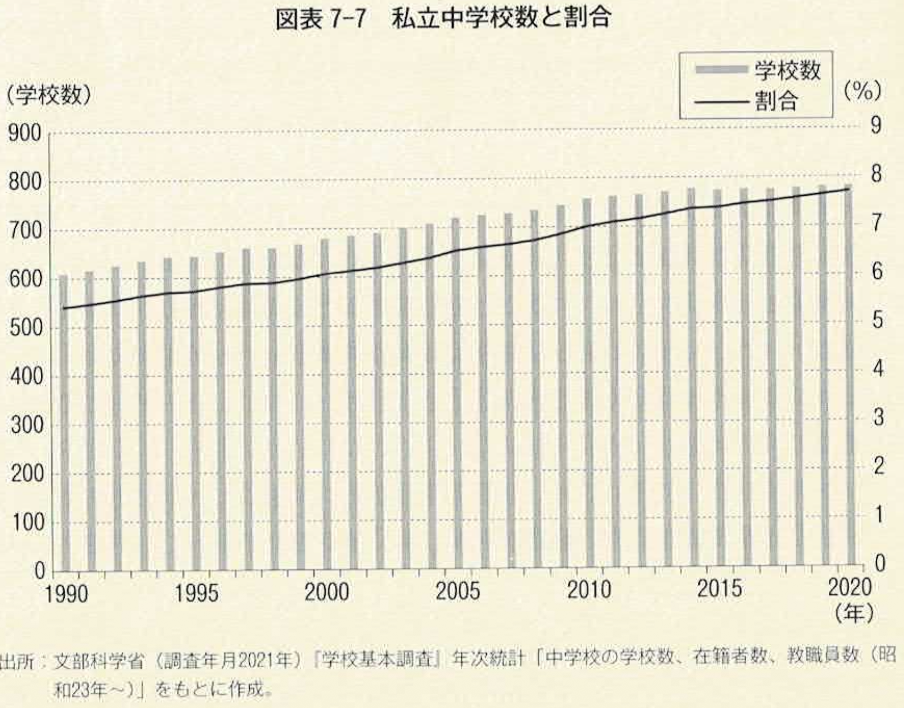
（出典：松塚 第7章 第4節 4-1、pp.181–182、図表7-6・7-7）
高校
2020年5月1日の時点で、日本の高校の全在籍者数は3,092,064人、そのうち公立高校に在籍する生徒は2,065,980人、国立高校に在籍する生徒は8,452人、私立高校に在籍する生徒は1,017,632人であった。私立高校に在籍する生徒数の割合は32.9%となっている。2008年以降も高校生人口全体では少子化傾向は続くものの、私立高校の在籍者数は2010年以降上昇に転じた後に大きな減少は見られない。全高校生数に占める割合は2010年の29.8%から32.9%へと急速に上昇している。これは、2010年代初頭より各都道府県で私立高校授業料の無償化が進んだ影響を受けているものと思われる。
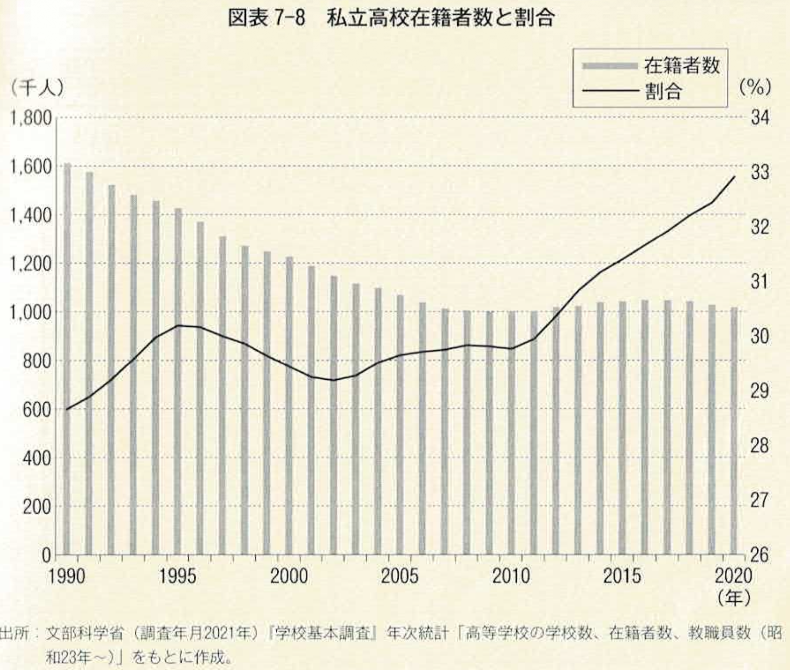
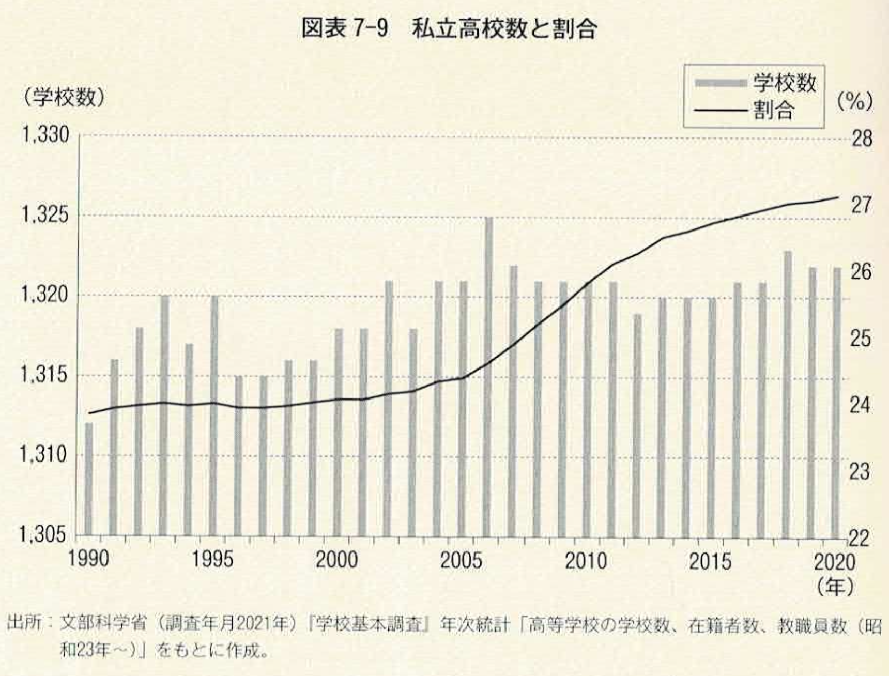
中学校・高校ともに私立の割合が増えているのは、日本の中等及び後期中等教育が「民営化」の流れのなかにあることの一つの表れといえよう。
（出典：松塚 第7章 第4節 4-1、pp.181–184、図表7-6〜7-9）
民営化の政策と実践
日本では1990年代より学校選択が可能となった。公立学校のなかでの「選択」であり、「民営化」の表れとはいえないものの、民営化の最大の特徴である選択幅の拡大は実現したといえる。
1997年1月に文部科学省から各都道府県教育委員会教育長に対して「通学区域制度の弾力的運用について」が通知された。
以下はその通知内容である。
通学区域制度の運用に当たっては、行政改革委員会の「規制緩和の推進に関する意見（第２次）」の趣旨を踏まえ、各市町村教育委員会において、地域の実情に即し、保護者の意向に十分配慮した多様な工夫を行うこと。
就学すべき学校の指定の変更や区域外就学については、市町村教育委員会において、地理的な理由や身体的な理由、いじめの対応を理由とする場合の具体的な事情に即して相当と認めるときは、保護者の申立により、これを認めることができること。
通学区域制度や就学すべき学校の指定の変更、区域外就学の仕組みについては、入学期日等の通知など様々な機会を通じて、広く保護者に対して周知すること。また、保護者が就学について相談できるよう、各学校に対してもその趣旨の徹底を図るとともに、市町村教育委員会における就学に関する相談体制の充実を図ること。
これによって、規定の学校区内で定められていた学校ではなくとも、学校区内あるいは学校区を越えて学校を選ぶことができるようになり、一定の柔軟性がもたらされた。
更に、2003年3月31日に学校教育法施行規則の一部が改正され、各市町村の教育委員会の判断により学校選択制を導入できることが明文化された。
文部科学省が定める学校選択制の五つの分類
- 自由選択制：当該市町村内のすべての学校のうち、希望する学校に就学を認めるもの
- ブロック選択制：当該市町村内をブロックに分け、そのブロック内の希望する学校に就学を認めるもの
- 隣接区域選択制：従来の通学区域は残したまま、隣接する区域内の希望する学校に就学を認めるもの
- 特認校制：従来の通学区域は残したまま、特定の学校について、通学区域に関係なく、当該市町村内のどこからでも就学を認めるもの
- 特定地域選択制：従来の通学区域は残したまま、特定の地域に居住する者について、学校選択を認めるもの
（出典：松塚 第7章 第4節 4-2、pp.184–186）
学校選択制への反応
学校選択制の実施状況と実施をめぐる所見について、文部科学省が全国の市町村教育委員会を対象に行った調査（2006年・2012年）及び内閣府が小・中・高等学校に通う子どもを持つ保護者2,200人に対して行った「学校教育に関する保護者アンケート」の回答結果をもとに概観する。
自治体による選択制の導入状況（小学校）
小学校における1997年の学校選択制導入数は33件であった。10年後の2006年には187件となり約5.7倍増加している。その後、2012年10月1日の時点で学校選択を実施していると回答した自治体は246件で全体の15.9%であった。2006年以降伸びが緩やかになり、2012年まで30%ほどの伸びにとどまっている。
選択制に対する肯定的見解
学校選択制を導入しているあるいは導入の経験がある自治体に対して、学校選択制を導入して良かったことについて尋ねている。小学校では回答数の多い順に、「子どもが自分の個性にあった学校で学ぶことができるようになった」が125件（49.2%）、「保護者の学校教育への関心が高まった」が92件（36.2%）、「選択や評価を通じて特色ある学校づくりが推進できた」が83件（32.7%）であった。
選択制に対する否定的見解
学校選択制を導入していないし、導入の検討も必要ないと考えていない自治体に対して、その理由を尋ねた結果（小学校対象1,267件）は、「学校と地域との連携が希薄になるおそれがある」が937件（74.3%）、「通学距離が長くなり、安全の確保が難しくなる」が775件（61.4%）、「入学者が大幅に減少し適正な学校規模を維持できない学校が生じるおそれがある」が720件（57.3%）、「学校間の序列化や学校間格差が生じるおそれがある」が533件（42.2%）であった。
（出典：松塚 第7章 第4節 4-3、pp.187–191）
東京都の選択制実施状況
最近の状況については都道府県別の調査結果が発表されている。東京都の例を挙げると、2021年3月現在、小学校で自由選択制を実施しているのは62区市町村のうち3区と1市、ブロック選択制を実施しているのは1市、隣接区域選択制を実施しているのは8区と2市、特認校制を実施しているのは1区と1市、特定地域選択制を実施しているのは1市で、計18区市町村であった。
中学校では、自由選択制を実施しているのは15区と6市、ブロック選択制を実施しているのは1市、隣接区域選択制を実施しているのは2区と1市、特認校制を実施しているのは1区、特定地域選択制を実施しているのは1市と計27区市町村である。
小学校・中学校・義務教育学校を合わせると、東京都では62区市町村のうち27区市、44%でなんらかのかたちで学校選択制を導入していることとなる。
（出典：松塚 第7章 第4節 4-4、p.192）
公設民営学校の運営事例
2013年に第二次安倍内閣のもとで成長戦略の柱として「国家戦略特別区域法」が制定された。そののち、2015年7月「国家戦略特別区域法および構造改革特別区域法の一部を改正する法律」が成立したことによって、国家戦略特区内において公立学校の管理運営を包括的に民間委託することが可能となった。
大阪市で2019年4月に開校した「水戸国際中学校・高等学校」は、日本で初の公設民営による公立の中高一貫校である。設立は大阪市教育委員会であるが、運営は学校法人大阪YMCAに委託されYMCAが「指定管理法人」として学校運営にあたる。
欧米のチャーター・スクールとの違い
他国のチャーター・スクールとの最大の違いは、設立の在り方の違いにある。欧米を起源とするチャーター・スクールは、ボトムアップではじまる。まず、学校運営に関心のある保護者や地域団体などが自ら手を挙げて教育委員会に申請する。一方で水戸国際中・高の場合は「国家戦略特別区域法」に基づく設置であり、国のインセンティブをもってトップダウンに企画設計されたものである。したがって「指定管理法人」としてのYMCAが学校の運営ができなくなった場合は大阪市教育委員会が運営の責任を持つ。入学試験を課していることも海外の主だったチャーター・スクールと異なる点である。
日本の公設民営学校は、欧米のチャーター・スクールと同じ「公設民営」という名称を持ちながら、その設立の経緯・理念・運営の責任体制において大きく異なる。日本型の公設民営学校をどのように評価するかは、今後の重要な政策的・学術的課題である。
（出典：松塚 第7章 第4節 4-5、pp.192–193）
12.6 学校選択をめぐる賛否
本章（第8章）は、第7章で扱った教育の民営化と学校選択の議論を引き継ぎ、与えられた選択の機会が本当に選択・利用できるものなのか、また学校選択によって教育の機会は実際に向上するのかを検討する。まず、学校選択をめぐる賛否をウエスト（West, 1965）が用いた「効果」「効率」「平等・公平」という三つの観点から整理する。次に、学校選択の効果を検証する実証研究と理論モデルを紹介し、選択によって教育機会が本当に向上するのかを考える。
（出典：松塚 第8章 冒頭、p.197）
なぜ「選択の機会」を望むのか
教育経済学が学校選択に関心を寄せる中心的な理由は、教育を受ける者にとって「どこで何を学ぶかについて選択肢があるか」「選択ができるかどうか」にある。教育を受ける権利そのものは、法治国家であればどの国でも国民の権利として保障されている。しかし、そこに加えて求められているのは、学校の場所・教育の内容・方法、そしておそらくは教師についても、複数の選択肢のなかから選べる「機会」である。
選択の自由に縛りが少ないほど、私たちは望むものをより多く手に入れることができる。選択肢の多さと選択幅の広さは、金銭的な豊かさを測る物差しにもなり得る（Chen, 1987）。教育の機会をめぐる「選択肢」は学校の種類・場所・教育内容や方法からなるが、この選択肢を狭める「縛り」は学校区等の通学範囲の制限や教育費に充てる予算の制約である。
ここで留意すべきは、「選択の機会がある」ということと、「機会を選択・利用できる」ということは同一ではない、という点である。選択の機会を与えられたとしても、制度的あるいは経済的な縛りがあれば、その機会を選択して利用することはできない。学校選択制とは、経済学的にいえば、機会の選択・利用を可能にする制度のことである。
（出典：松塚 第8章 第1節、pp.197–198）
効果・効率・平等公平を評価軸とした賛否
学校選択制を導入している、あるいは導入の経験のある国は世界中に及んでいるが、国や地域によって制度設計は一様ではない。ここでは、生徒とその保護者が学校を選択でき、かつバウチャー等によって選んだ学校に公的予算を充てることができる制度に限定して、賛否両論を整理する。
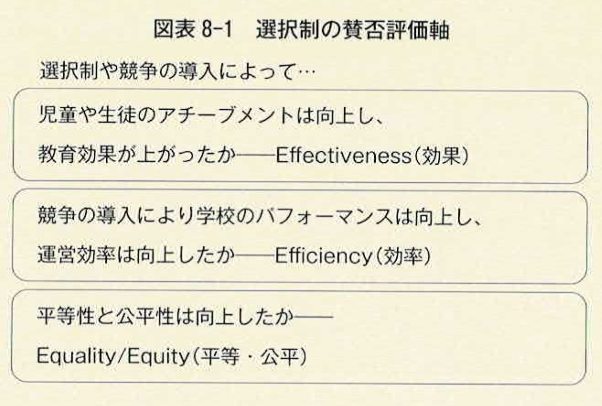
（出典：松塚 第8章 第2節 2-1、pp.198–199、図表8-1、p.199）
この評価軸を用いて、学校選択及びバウチャー制度・学区制の撤廃について、支持派と反対派それぞれの根拠を整理したのが下表である。
| 観点 | 支持 | 反対 |
|---|---|---|
| 教育効果 | 競争原理により保護者・生徒のニーズに即した教育が可能になる。個々の価値観を尊重すべきで、「偏る」場合は市場のなかで淘汰される。市場が新しいタイプの学校を生み出す。 | ニーズに応じることが必ずしも妥当な教育とは限らない。特定の宗教・価値観に偏る可能性がある。良い学校だけに生徒が集まり、残された学校の質は一層低下する。 |
| 効率性（学校単位） | 競争導入により運営効率が上がる。低コストで優秀な生徒を輩出できる。 | 効率化が教育に適切かは疑問。教育の質管理は市場になじまない（学校選択による「イン・アンド・アウト」の難しさ）。 |
| 効率性（行政単位） | 公共セクターの無駄を削減できる。バウチャー導入は費用総額を変えずに実施可能。 | バウチャーは上乗せ配分となり総予算が増加しかねない。 |
| 平等・公平性 | 貧困層も機会さえ与えられれば将来のために活用する。選択により階層化が低減できる（特殊化の促進）。 | 貧困層は情報量が少なく選択の能力に欠ける。自由選択が階層化を進める。富裕層はバウチャーに上乗せしてより大きな差を生む。 |
（出典：松塚 第8章 第2節 2-1、pp.199–200、図表8-2、p.200）
教育効果への影響
学校選択制の支持派は、選択制が個々の価値観を尊重すると考える。仮に「偏った」学校ができたとしても、そのような学校からはバウチャーを換金せず運営権を取り上げればよいという意見もある。また、学校選択制の支持派は選択制の導入によって教員の質が上がるとする。教員が努力をしなければ生徒が集まらなくなるためである。これに対し反対派は、教員の質を測る基準は一定ではないと反論する。厳しい指導で敬遠されていた教員が、後年になって感謝される例は少なくない。
学校選択制が教育効果を上げるとする支持派の最後の論拠は、市場が新しいタイプの学校を生み出すという期待である。学校を設立したいと望む者こそ特色ある教育を提供できるという発想であり、第7章で紹介したチャーター・スクールやマグネット・スクールを想定した議論である。反対派はこれに対し、人気のある学校は潤うが残された学校には金銭的余裕の無い、教育への関心の薄い保護者の子どもが通うことになり、そのような学校の質は一層低下すると主張する。
（出典：松塚 第8章 第2節 2-1-1、pp.200–201）
運営効率への影響
「効率性」の観点からは、学校選択制によって学校間で競争が展開され、低コストでより良い教育を提供しようとするインセンティブが生まれるというのが支持派の主張である。
一方、反対派は効率化そのものが教育にとって適切かを問う。教育は一般消費財と異なり「イン・アンド・アウト」が容易ではないと指摘する。例えば、洋服や飲食物であれば気に入らなければ次から選ばなければよい。しかし、ある中学校に入学したものの学校が合わなかったとしても、転校（イン・アンド・アウト）を繰り返すことは児童・生徒や保護者はもちろん、学校や自治体にとっても大きなコストとなる。したがって「教育」という営みは市場原理による効率化になじまない、というのが反対派の主張の背景にある。
行政単位での効率性についても、支持派は公共セクターの無駄削減を主張する一方、反対派は民間主導型の学校運営が短期的収益を優先し、長期的視野に立った教育実践がしにくくなると考える。バウチャー制度についても、反対派はバウチャーの額面を教育費に上乗せする形で予算が増加することを懸念するが、支持派は費用総額を変えずにバウチャーへ充当することが可能であり、効率は低下しないと主張する。
（出典：松塚 第8章 第2節 2-1-2、pp.201–203）
機会の平等・公平性への影響
支持派は、貧困層の親も機会さえ与えられれば、子どもの将来のためにその機会を活用すると考える。「金券」ともいえるバウチャーを手にすると、それを使いたくなるのが人情であり、貧しい者にとってもより良い選択が進むとする。
反対派はこれに対し、貧しい親ほど教育に関する情報量が少なく選択の能力に欠ける傾向があると主張する。健康状態や家庭内の状況など数値化できる困難とは異なり、教育への関心の低さや情報収集力の不足は可視化されにくいが、選択行動に重要な影響を与える。バウチャーを支給されたとしても、どの学校を選べばよいかを判断する材料が無ければ、それを活かす術がない。
支持派は加えて、住宅区域によって通学校が決まる現行制度よりも、学校選択制の方が階層化を低減できると主張する。特色あるプログラムのもとに児童・生徒自身が得意分野で学校を選べば、学力による格差ではなく多様な価値のもとに学校選びがなされ、格差は生じにくいという理屈である。一方、反対派は、自由な選択によって富裕層はより高いレヴェルの学校を選び、貧困層は住居を変える術も交通費の負担も持たないため、学校区外への進学が事実上できないと指摘する。結果として選択の自由は、富める者と貧しい者の教育格差を拡大させるだけで公平性を高める手段とはなり得ない、というのが反対派の結論である。
（出典：松塚 第8章 第2節 2-1-3、pp.203–206）
支持派・反対派、どちらの論拠に説得力を感じるか
個人ワーク（3分）ペアワーク（5分）
「教育効果」「効率性」「平等・公平性」のうち、あなたが最も説得力を感じる論点はどれですか。支持・反対のどちらの立場でも構いません。
- 教育を「一般消費財」と同じように「イン・アンド・アウト」できるものと考えるべきか、それとも教育には特別な性質があると考えるべきか、意見を交換してみましょう。
- 「情報量の格差」が選択の格差につながるとすれば、どのような対策が考えられるでしょうか。
考え方の整理
学校選択制をめぐる賛否は、「効果」「効率」「平等・公平」のいずれの観点から見るかによって結論が変わり得る。三つの観点は必ずしも同じ方向を向くとは限らず、ある観点で望ましいとされる制度が、別の観点からは望ましくないと評価されることも少なくない。
12.7 学校選択制の効果検証
実証研究の蓄積
学校選択制をめぐる支持・反対両派の意見は、それぞれに納得できる論理を持っており、その是非について確定的な結論は出ていない。一方で、学校選択制やバウチャー制度の効果や意義を実証的に検証しようとする研究の蓄積も進んでいる。特にチリでは1980年より、スウェーデンでは1992年より大掛かりにバウチャー制度を導入しており、これらの国では実証研究が豊富に存在する。
チリとスウェーデンを対象とした研究には、Carnoy (1998)、Lara, Mizala & Repetto (2011)、McEwan (2001)、McEwan & Carnoy (2000)、Böhlmark & Lindahl (2008)、Hinnerich & Vlachos (2017) 等があり、これらの多くは「教育効果」と「学校運営の効率化」を検証対象としている。学校選択制とバウチャー制度に関する研究結果を総合的に見ると、肯定的な結果と否定的な結果がおそらく同じくらい存在する。
（出典：松塚 第8章 第3節 3-1、pp.206–207）
バウチャー効果検証の理論的枠組み
個々の実証研究の結果に留まらず、バウチャーの効果を検証する理論的枠組みを紹介する。ここで紹介するのは、教育への効果や学校運営の効率だけでなく「教育機会」の観点にもつながる、エップルとロマーノの理論的考察（Epple & Romano, 1998）を簡略化したものである。
検証の枠組み（仮定）
公立学校と私立学校を想定する。公立学校は授業料が無料で学力審査がなく、入学は学力に左右されない。私立学校は授業料を徴収し、学力審査があり、その審査を通らなければ入学することができない。生徒は条件が許せば、学力レヴェルの高い学校への入学を希望するとし、公立学校よりも私立学校への入学を希望すると仮定する。
学力（縦軸）と世帯所得（横軸）をもとに、生徒を四つのタイプに分ける。
- A（HA, LI）：ハイアビリティー・ローインカム（学力が高く、世帯所得が低い）
- B（HA, HI）：ハイアビリティー・ハイインカム（学力が高く、世帯所得も高い）
- C（LA, HI）：ローアビリティー・ハイインカム（学力は低いが、世帯所得は高い）
- D（LA, LI）：ローアビリティー・ローインカム（学力が低く、世帯所得も低い）
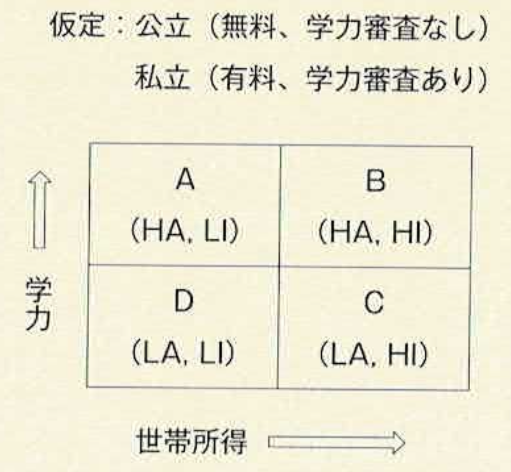
（出典：松塚 第8章 第3節 3-2、p.207、図表8-3、p.207）
バウチャー導入前の就学状況
バウチャー導入前は、学力も世帯所得も高い「B」のみが授業料と学力審査という条件を満たし、私立学校に入学することができる。学力はあっても世帯所得が低い「A」、そして学力の低い「C」「D」は公立学校に通うこととなる。
バウチャー導入後の通学先の変化
バウチャー導入後は、「B」はそのまま私立学校に通い続ける一方、学力はあるが世帯所得の低かった「A」もバウチャーを得ることで私立学校に入学できるようになる。学力の無い「C」と「D」は、引き続き公立学校に通うことになる。
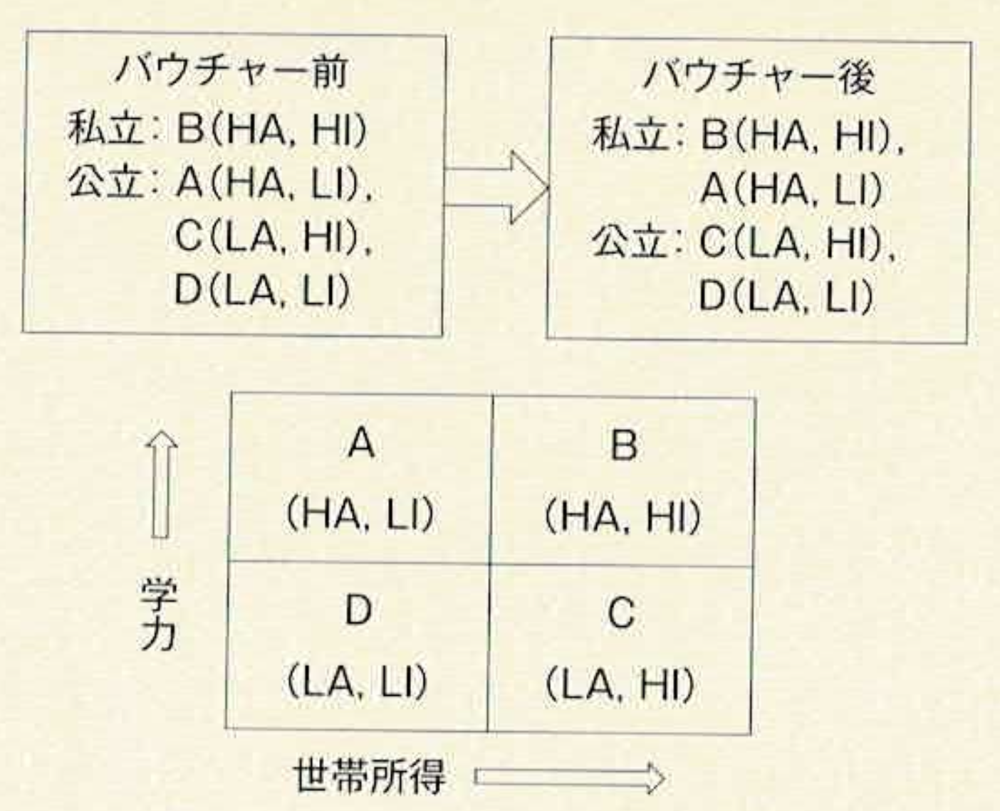
（出典：松塚 第8章 第3節 3-2-1、pp.207–208、図表8-4、p.208）
費用負担と教育環境の変化
公立学校の一人当たり教育費を100万円と仮定する。バウチャー導入前は公立に通う生徒（A・C・D）が3人おり、公立学校の費用総額は300万円、これを4世帯で分担するため一人当たり75万円となる。「B」は75万円を公立教育のための税負担として支払ったうえで、私立の授業料を家計から別途負担する。
バウチャー導入後は、「A」が私立に移るため、公立学校に通うのは「C」と「D」の2人のみとなり、公立の費用総額は200万円に減少する。これを4世帯で割ると一人当たり50万円となり、浮いた100万円がバウチャーの原資（一人当たり50万円）となる。結果として、「A」と「B」は50万円の負担で50万円相当のバウチャーを受け取って私立に通い、「C」と「D」も負担額は75万円から50万円に下がる。
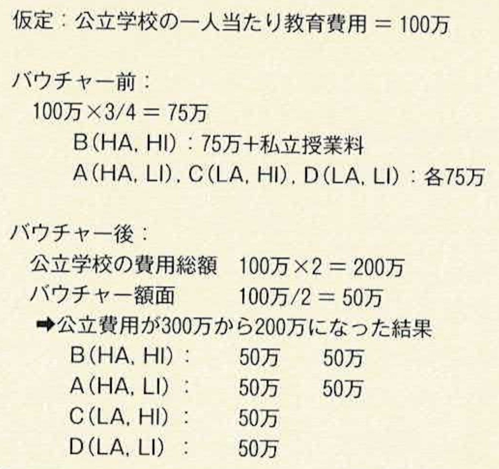
生徒の費用負担だけを見れば、全員が恩恵を受けているように見える。しかし、公立学校の一人当たり予算が75万円から50万円に減少したことは、公立学校に残る「C」「D」の教育環境や学力に影響を与えかねない。加えて、学力の高い「A」が公立から抜けたことで、公立学校に残る生徒たちの間の「ピア効果」がマイナスに傾くと考えられる。
エップルとロマーノの理論モデルによれば、予算を追加しなくてもバウチャー制度を導入することは可能であり、学力はあるが貧しいために良好な教育を受けられなかった生徒には学校を選択する機会を与え、学力を伸ばすことが期待できる。一方で、予算配分の少なくなった公立学校の学習環境は低下し、そこで学ぶ生徒の学力にも負の影響を与えることが示唆される。したがってバウチャー制度による学校選択制は、一定の個人の教育機会を向上させる一方で、社会全体に対して公平により良い教育機会を提供するという学校の重要な役割を減少させてしまう可能性がある。
（出典：松塚 第8章 第3節 3-2-2〜3-2-3、pp.208–211、図表8-5、p.209）
今後の課題
学校選択制度の効果をめぐり、「教育への効果」「学校運営の効率」「教育機会の平等や公平性」の観点から検討してきた。これら三つは健全な学校教育のためにすべてが欠かせない。競争によって運営効率が上がり費用が下がったとしても、教育効果が上がらないのであれば選択制度の目的は達成できない。運営効率が上がり教育効果も向上したとしても、社会的公平性が低下するのであれば教育の機会が向上したとはいえない。これら三つはトレードオフの関係にはなく、すべてが満たされる制度運営こそが問われなくてはならない。
学校選択は、世界的に議論され、実践され、あるいは実施後に廃止もされている継続的な課題である。前章で述べたように、日本でも学校選択制は導入されており、学区制も確実に緩やかになった。地元に根差した初等教育を担う自治体の裁量による制度設計は重要であり、特に少子化が進むなか、教育の効果と運営効率性を高めることが一層問われるだろう。
（出典：松塚 第8章 第3節 3-3、pp.211–212）
バウチャー導入前後の変化を考える
個人ワーク（3分）
「A」「B」「C」「D」の4タイプのうち、バウチャー導入によって通学先が変わったのは誰でしょうか。またその理由を学力・世帯所得の観点から説明してみましょう。
グループワーク（5分）
- バウチャー導入によって公立学校に残る「C」「D」の教育環境はどうなると考えられますか。
- エップルとロマーノのモデルは、「予算を追加せずにバウチャー制度を導入できる」としています。この結論に賛成しますか、反対しますか。理由も述べてください。
考え方の整理
バウチャー導入によって恩恵を受けるのは、学力はあるが世帯所得の低かった「A」である。「B」は変化がなく、「C」「D」は公立学校に留まるものの、一人当たりの教育予算は減少し、ピア効果の面でも不利益を被る可能性がある。この理論モデルは、個人レヴェルでの教育機会の向上と、社会全体としての教育の公平性が必ずしも両立しないことを示している。
12.8 まとめ
教育の民営化とは
- 「民営化」とは民営へと移行する経緯・工程・結果の総体であり、構造的変化と政策実践の二つのパターンがある
- 民営化の研究は（1）供給側：学校の管理運営体制の変容、（2）需要側：保護者・生徒の教育需要行動の変容、の二側面から検討される
民営化の理論的根拠
- フリードマン（1962）：政府規制の最小化・地方分権・民営化によって市場原理が教育の質と効率を高める
- ウエスト（1965）：市場原理の導入が（1）学校運営の効率向上、（2）教育の質向上、（3）貧困層への恩恵をもたらす
- これらの主張は1970〜80年代のイギリス（サッチャー改革）・アメリカ（レーガン政権）での政策的実践につながった
民営化の実際と方法
- バウチャー制度：保護者に「学校選択の切符」を渡す需要側の改革。フリードマンが提唱。オランダ・スウェーデン・アメリカなどで実施
- チャーター・スクール：民間が公的資金で運営する公立学校。アメリカの全就学者の約6.5%が通学（2019年）
- マグネット・スクール：特別なカリキュラムで学区を超えて生徒を引きつける公立学校。コールマン・レポートを踏まえた人種統合政策の文脈で誕生
日本における教育の民営化
- 私立中学校の在籍割合：1990年3.8% → 2020年7.5%（倍増）
- 私立高校の在籍割合：2010年29.8% → 2020年32.9%（増加）
- 1997年の通学区域弾力的運用・2003年の学校選択制明文化により選択幅が拡大
- 東京都では62区市町村の44%でなんらかのかたちの学校選択制を導入
- 2019年、日本初の公設民営による公立中高一貫校（水戸国際中学校・高等学校）が大阪市に開校
学校選択をめぐる賛否と効果検証
- 学校選択制の評価軸（West, 1965）：（1）効果、（2）効率、（3）平等・公平
- 支持派は競争による教育効果・効率の向上と貧困層への恩恵を主張。反対派は教育の「イン・アンド・アウト」の難しさ、情報格差による選択能力の差、階層化の進行を懸念
- チリ・スウェーデンの実証研究では、学校選択制の効果について肯定的・否定的な結果がおそらく同程度に存在する
- エップルとロマーノの理論モデル（Epple & Romano, 1998）：バウチャー導入により学力の高い低所得層（A）は私立に移行できるが、公立学校に残る生徒（C・D）の一人当たり予算とピア効果は低下し得る
- 「効果」「効率」「平等・公平」はトレードオフではなく、すべてを満たす制度運営が求められる
12.9 参考文献
- Friedman, M. (1962) Capitalism and Freedom. Chicago: University of Chicago Press.（フリードマン，ミルトン（著），熊谷尚夫，白井孝昌，西山千明（訳）（1975）『資本主義と自由』マクグロウヒル好学社）
- West, E. G. (1965) Education and the State. London: Liberty Fund.
- Witte, J. F. (2000) The Market Approach to Education: An Analysis of America’s First Voucher Program. Princeton University Press.
- Verger, A., Fontdevila, C. & Zancajo, A. (2016) The Privatization of Education: A Political Economy of Global Education Reform. New York: Teachers College Press.
- Fitz, J. & Hafid, T. (2007) Perspectives on the Privatization of Public Schooling in England and Wales. Education Policy, 21(1), pp.273–296.
- Molnar, A. (2000) Vouchers: Class Size Reduction and Student Achievement: Considering the Evidence. Bloomington, Indiana: Phi Delta Kappa.
- Plank, D. N. & Sykes, G. (2003) Choosing Choice: School Choice in International Perspective. New York: Teacher College Press.
- OECD (2020) Education at a Glance 2020: OECD Indicators. Paris: OECD Publishing.
- Böhlmark, A. & Lindahl, M. (2008) Does School Privatization Improve Educational Achievement? Evidence from Sweden’s Voucher Reform. IZA Discussion Paper, No. 3691.
- Carnoy, M. (1998) National Voucher Plans in Chile and Sweden: Did Privatization Reforms Make for Better Education? Comparative Education Review, 42(3), pp.309–337.
- Chen, Y.-P. (1987) Choices and Constraints: Economic Decisionmaking. Malvern: American Institute for Property and Liability Underwriters.
- Epple, D. & Romano, R. E. (1998) Competition between Private and Public Schools, Vouchers, and Peer-Group Effects. The American Economic Review, 88(1), pp.33–62.
- Epple, D. & Romano, R. E. (2011) Peer Effects in Education: A Survey of the Theory and Evidence. In J. Benhabib, A. Bisin & M. O. Jackson (eds.) Handbook of Social Economics, 1, pp.1053–1163, North-Holland: Elsevier.
- Hinnerich, B. T. & Vlachos, J. (2017) The Impact of Upper-Secondary Voucher School Attendance on Student Achievement: Swedish Evidence Using External and Internal Evaluations. Labour Economics, 47(C), pp.1–14.
- Lara, B., Mizala, A. & Repetto, A. (2011) The Effectiveness of Private Voucher Education: Evidence From Structural School Switches. Educational Evaluation and Policy Analysis, 33(2), pp.119–137.
- Levin, H. M. (1991a) The Economics of Educational Choice. Economics of Education Review, 10(2), pp.137–158.
- Levin, H. M. (1991b) Views on the Economics of Educational Choice: A Reply to West. Economics of Education Review, 10(2), pp.171–175.
- McEwan, P. J. (2001) The Effectiveness of Public, Catholic, and Non-Religious Private Schools in Chile’s Voucher System. Education Economics, 9(2), pp.103–128.
- McEwan, P. J. & Carnoy, M. (2000) The Effectiveness and Efficiency of Private Schools in Chile’s Voucher System. Educational Evaluation and Policy Analysis, 22(3), pp.213–239.
- Sacerdote, B. (2011) Peer Effects in Education: How Might They Work, How Big Are They and How Much Do We Know Thus Far? In Eric A. Hanushek, Stephen J. Machin & Ludger Woessmann (eds.) Handbook of the Economics of Education, 3, pp.249–277, North-Holland: Elsevier.
- 市川昭午（2006）『教育の私事化と公教育の解体——義務教育と私学教育』教育開発研究所。
- 小塩隆士（2003）『教育を経済学で考える』日本評論社。
- 黒崎勲（1995）『現代日本の教育と能力主義——共通教育から新しい多様化へ』岩波書店。
- 黒崎勲（2006）『教育の政治経済学』日日教育文庫。
- 松塚ゆかり（編著）（2021）『教育経済学の最前線』ミネルヴァ書房。